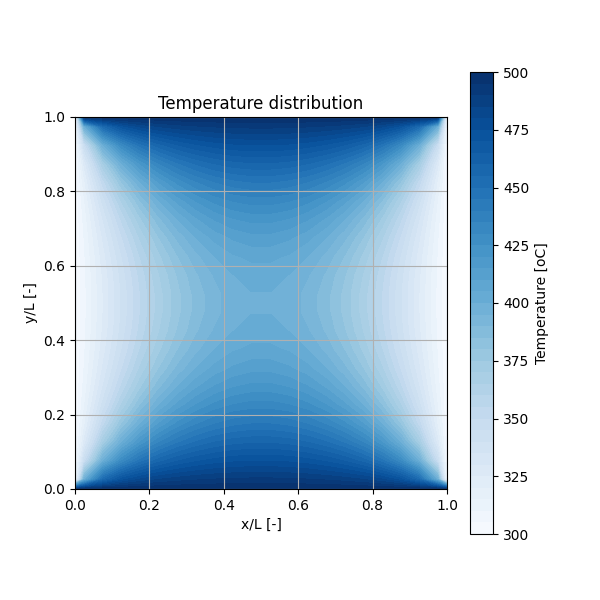
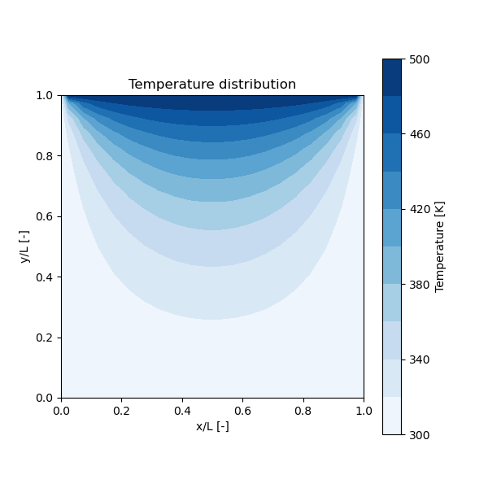
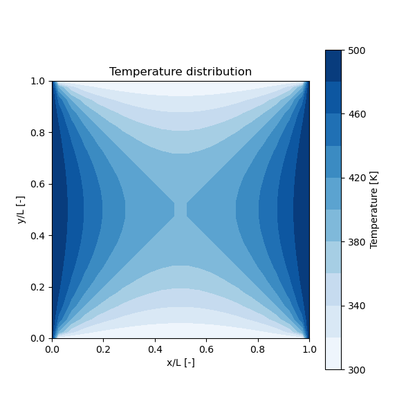
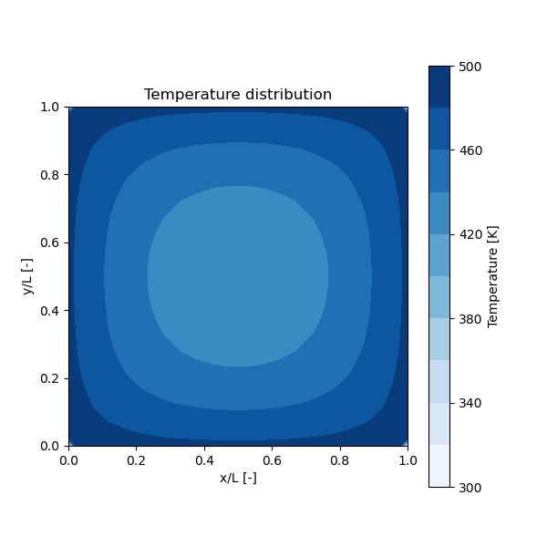

This lesson covers programs that solve the 2D steady-state heat conduction equation using the finite difference method.
2d.Ans.py)This program solves a 2D steady-state heat conduction problem where the side walls are held at a high temperature and the top/bottom walls at a low temperature.

2d.Ans.py)import numpy as np
import matplotlib.pyplot as plt
# ...
# --- (Omitted: Parameter & Grid Setup) ---
## coefficient
# ... (ce, cw, cn, cs are defined here) ...
# The central coefficient co is the sum of the neighbors.
for j in range(1,N+1):
for i in range(1,N+1):
co[j,i]=(ce[i]+cw[i]+cn[j]+cs[j])
## Set Boundary Conditions for Case 2
T[N+1,:] = TL # top
T[0,:] = TL # bottom
T[:,0] = TH # left side
T[:,N+1] = TH # right side
Tp=cp.copy(T) # Set initial guess
## sink term (not significant in this case)
Sphi=np.zeros((N+2,N+2))
Sphi[:,:] = 1.0
## Iteration loop (Jacobi Method)
while flg == 1:
l+=1
flg=0
for j in range(1,N+1):
for i in range(1,N+1):
# Temperature T at (j,i) is calculated from the neighbors'
# temperatures of the *previous* step (Tp).
T[j,i] = 1/co[j,i] * ( ce[i] *Tp[j,i+1] + cw[i]*Tp[j,i-1] + cn[j]*Tp[j+1,i] + cs[j]*Tp[j-1,i] -Sphi[j,i]*dx[i]*dy[j])
# --- (Omitted: Convergence Check and Update `Tp`) ---
# ...
# --- (Omitted: Visualization) ---
demo/2dAnsCase.py)A more practical simulation that solves three different cases by taking a command-line argument. This version uses the Gauss-Seidel method for faster convergence.



demo/2dAnsCase.py)Key differences from the basic exercise:
# ...
# Select case from command-line argument
# ...
# Set Boundary Conditions based on the case
if case =="case1":
T[N+1,:] = TH # top
# ... other walls are TL
elif case == "case2" :
T[:,0] = TH # side
T[:,N+1] = TH # side
# ... other walls are TL
# Set Sink Term (Heat Source) based on the case
if case=="case1" or case=="case2":
Sphi[:,:]=0.0
elif case=="case3" :
Sphi[:,:] = 500.0 # Internal heat source for Case 3
# ...
# Iteration loop
while flg == 1:
# ...
for j in range(1,N+1):
for i in range(1,N+1):
# Gauss-Seidel method: Uses the *newly updated* values (T)
# for the west and south neighbors within the same iteration.
T[j,i] = 1/co[j,i]* (ce[i]*Tp[j,i+1] + cw[i]*T[j,i-1] + cn[j]*Tp[j+1,i] + cs[j]*T[j-1,i] - Sphi[j,i]*dx[i]*dy[j])
# For Case 3, update boundary conditions considering heat transfer
if case == "case3" :
T[1:N+1,0] = (c * Tp[1:N+1,1] + TH)/(c + 1.0) # Left side
T[0,1:N+1] = (c * Tp[1,1:N+1] + TH)/(c + 1.0) # Bottom
# ... and so on for other boundaries
# ... (Convergence check) ...
# ... (Visualization) ...
このレッスンでは、2次元の定常熱伝導方程式を有限差分法で解くプログラムを扱います。
2d.Ans.py)左右の壁を高温、上下の壁を低温に設定したときの、2次元定常熱伝導問題を解きます。
2d.Ans.py)import numpy as np
import matplotlib.pyplot as plt
# ...
# --- (パラメータと格子の設定は省略) ---
## 係数
# ... (ここで ce, cw, cn, cs が定義される) ...
# 中心点の係数 co は、隣接点の係数の合計
for j in range(1,N+1):
for i in range(1,N+1):
co[j,i]=(ce[i]+cw[i]+cn[j]+cs[j])
## Case 2 の境界条件を設定
T[N+1,:] = TL # 上側
T[0,:] = TL # 下側
T[:,0] = TH # 左側
T[:,N+1] = TH # 右側
Tp=cp.copy(T) # 初期推測値を設定
## シンク項（このケースでは計算に大きく影響しない）
Sphi=np.zeros((N+2,N+2))
Sphi[:,:] = 1.0
## 反復計算ループ (ヤコビ法)
while flg == 1:
l+=1
flg=0
for j in range(1,N+1):
for i in range(1,N+1):
# (j,i) の温度Tを、*1ステップ前*の隣接点の温度(Tp)から計算する
T[j,i] = 1/co[j,i] * ( ce[i] *Tp[j,i+1] + cw[i]*Tp[j,i-1] + cn[j]*Tp[j+1,i] + cs[j]*Tp[j-1,i] -Sphi[j,i]*dx[i]*dy[j])
# --- (収束判定と `Tp` の更新は省略) ---
# ...
# --- (可視化処理は省略) ---
demo/2dAnsCase.py)コマンドライン引数で3つの異なるケースを解き分ける、より実践的なシミュレーションです。こちらでは、より収束の速いガウス・ザイデル法を用いています。
demo/2dAnsCase.py)基本演習との主な違い：
# ...
# コマンドライン引数からケースを選択
# ...
# ケースに応じて境界条件を設定
if case =="case1":
T[N+1,:] = TH # 上側
# ... 他の壁は TL
elif case == "case2" :
T[:,0] = TH # 左側
T[:,N+1] = TH # 右側
# ... 他の壁は TL
# ケースに応じてシンク項（熱源）を設定
if case=="case1" or case=="case2":
Sphi[:,:]=0.0
elif case=="case3" :
Sphi[:,:] = 500.0 # Case 3 では内部熱源を設定
# ...
# 反復計算ループ
while flg == 1:
# ...
for j in range(1,N+1):
for i in range(1,N+1):
# ガウス・ザイデル法: 同じ反復ステップ内で既に更新された西側と南側の
# 隣接点温度(T)を使って計算する
T[j,i] = 1/co[j,i]* (ce[i]*Tp[j,i+1] + cw[i]*T[j,i-1] + cn[j]*Tp[j+1,i] + cs[j]*T[j-1,i] - Sphi[j,i]*dx[i]*dy[j])
# Case 3 では、熱伝達を考慮して境界条件を更新
if case == "case3" :
T[1:N+1,0] = (c * Tp[1:N+1,1] + TH)/(c + 1.0) # 左側
T[0,1:N+1] = (c * Tp[1,1:N+1] + TH)/(c + 1.0) # 下側
# ... 他の境界も同様 ...
# ... (収束判定) ...
# ... (可視化) ...